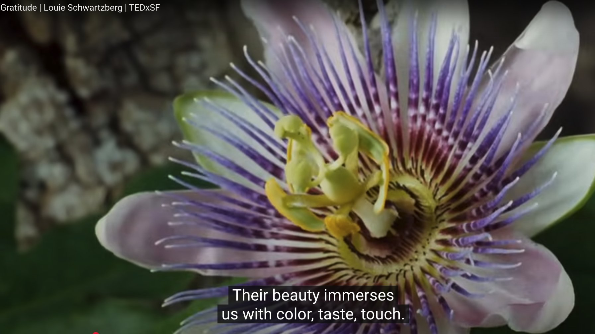

Gratitude | Louie Schwartzberg | TEDxSF
Posted April 4, 2025

https://www.youtube.com/watch?v=gXDMoiEkyuQ&t=5s
Summary of the TEDx talk "Gratitude" by Louie Schwartzberg in bullet points:
00:00-00:38: Louie Schwartzberg shares how he lived in a small town, Elk, on the Mendocino coast after graduating from UCLA, where he enjoyed a slower life without TV or phone but had access to mail.
01:06: He started shooting time-lapse photography, capturing nature, especially flowers, for over 30 years, which gave him a sense of wonder and connected him to nature.
01:28: Schwartzberg explains how nature’s beauty is essential to human survival, as it provides food and fosters an emotional connection that helps protect the environment.
02:03-02:25: He explores the meaning behind the phrase "Oh my God" as an expression of awe, connection, and a personal journey toward inspiration and life celebration.
02:53-03:27: Schwartzberg praises human perception, especially sight and the brain’s ability to process light and vibrations, allowing us to feel the beauty of nature, which cultivates gratitude.
03:27-04:04: Schwartzberg introduces his project Happiness Revealed, featuring perspectives from both a child and an elderly man on exploring life and beauty.
04:04-06:02: A video segment follows, where a child discusses how exploring the world and using imagination leads to discovering beauty, followed by David Steindl-Rast's reflection on the gift of life and the importance of gratitude.
06:02-06:37: Steindl-Rast emphasizes that every day is a gift, encouraging us to open our eyes and notice the unique beauty around us, such as the sky, clouds, and weather.
07:10-08:10: He urges people to appreciate the stories behind faces, the diverse histories of individuals, and the collective gifts of civilization like electricity and water, which many take for granted.
08:45-09:42: Steindl-Rast encourages us to allow gratitude to overflow, blessing everyone we encounter, making it a truly good day through appreciation and presence.